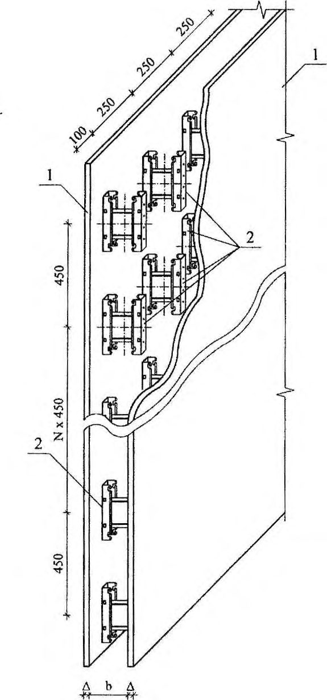
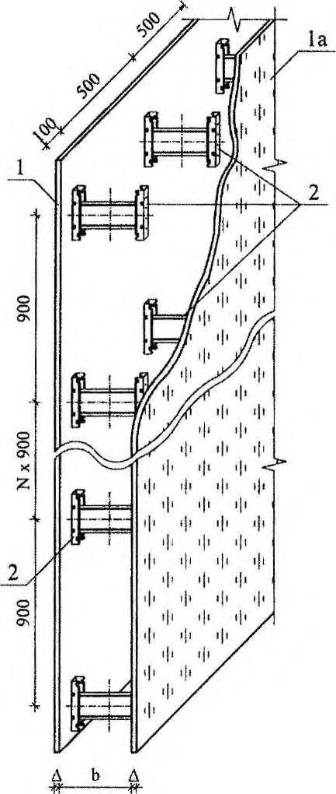
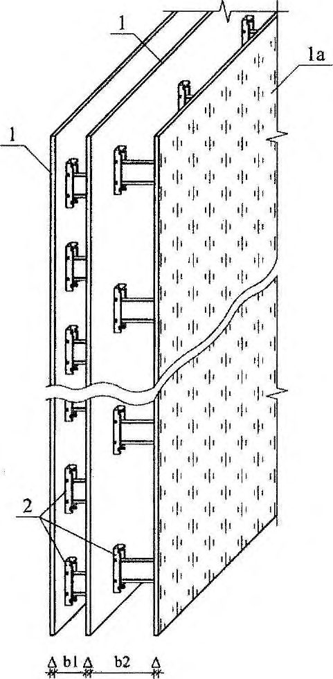
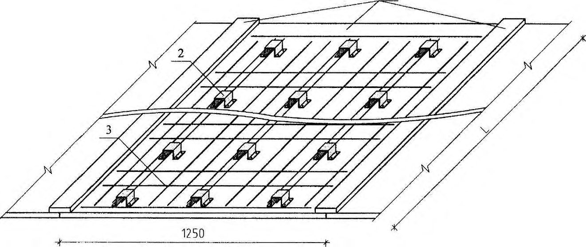
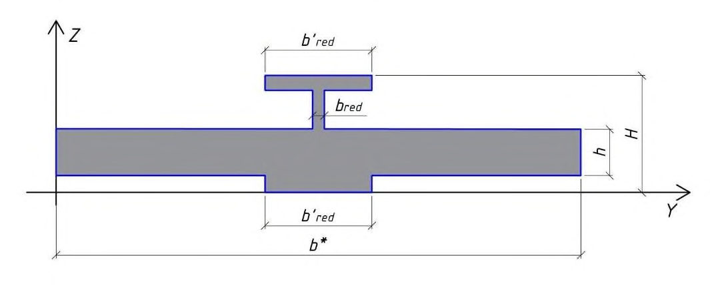

СП 414.1325800.2018 «Несъемная опалубка. Правила проектирования»
О документе: разработчики, утверждение, регистрация, ключевые слова
1 ИСПОЛНИТЕЛЬ - АО «НИЦ «Строительство» - НИИЖБ им. А.А. Гвоздева
2 ВНЕСЕН Техническим комитетом по стандартизации ТК 465 «Строительство»
3 ПОДГОТОВЛЕН К УТВЕРЖДЕНИЮ Департаментом градостроительной деятельности и архитектуры Министерства строительства и жилищно-коммунального хозяйства Российской Федерации (Минстрой России)
4 УТВЕРЖДЕН приказом Министерства строительства и жилищно-коммунального хозяйства Российской Федерации от 12 ноября 2018 г. № 719/пр и введен в действие с 13 мая 2019 г.
5 ЗАРЕГИСТРИРОВАН Федеральным агентством по техническому регулированию и метрологии (Росстандарт)
6 ВВЕДЕН ВПЕРВЫЕ
В случае пересмотра (замены) или отмены настоящего свода правил соответствующее уведомление будет опубликовано в установленном порядке. Соответствующая информация, уведомление и тексты размещаются также в информационной системе общего пользования - на официальном сайте разработчика (Минстрой России) в сети Интернет
© Минстрой России, 2018
Настоящий нормативный документ не может быть полностью или частично воспроизведен, тиражирован и распространен в качестве официального издания на территории Российской Федерации без разрешения Минстроя России
- 1 1 Область применения……………………………………………………………….
- 2 2 Нормативные ссылки………………………………………………………….……
- 3 3 Термины и определения…………………………………………………………...
- 4 4 Основные положения………………………………………………………………
- 5 5 Конструкции опалубок………………………………………………………………
- 6 6 Материалы для несъемной опалубки……………………………………………
- 7 7 Технические требования к конструктивным и расчетным параметрам несъемной опалубки и ее элементов………………………………….……….
- 7.1 Основные требования………………………………………………………..
- 7.2 Показатели качества несъемной опалубки системы ОЩНО…………..
- 7.3 Показатели качества блоков несъемной опалубки системы БНО………
- 7.4 Показатели качества замковых соединений……………………………..
- 7.5 Показатели качества арматуры в конструкциях с несъемной опалубкой
- 7.6 Проектирование и конструирование стен, монтируемых из блоков опалубки………………………………………………………………………..
- 7.7 Прочностные и деформационные характеристики опалубки при транспортно- такелажных, монтажных операциях и при укладке бетона
- 8 8 Правила проектирования несъемной опалубки…………………………….…..
- 9 Требования безопасности и охрана окружающей среды……………………..
- Приложение А Пример расчета несъемной опалубки из арболитовых блоков при боковом давлении бетонной смеси …………………………..
Приложение Б Пример расчета стены из блоков опалубки ……………………
Дата введения - 2019-05-13
УДК ОКС 91.220
Ключевые слова: несъемная опалубка; проектирование; расчет; сбор нагрузок; материалы; прочность при сжатии, прочность при растяжении, при изгибе; жесткость, нагрузка; давление гидростатическое, давление бетонной смеси, боковое давление; нормативные расчетные сопротивления; модуль упругости; скорость бетонирования; прогиб
Руководитель организации- разработчика АО «НИЦ «Строительство»
Генеральный директор
А.В. Кузьмин
Руководител ь разработки Директор
НИИЖБ им. А.А. Гвоздева
А.Н. Давидюк
Исполнители
Заведующий лабораторией № 13 НИИЖБ им. А. А. Гвоздева
В.Ф. Степанова
Ведущий научный сотрудник
В.И. Савин
Введение
Настоящий свод правил разработан с учетом требований федеральных законов от 30 декабря 2009 г. № 384-ФЗ «Технический регламент о безопасности зданий и сооружений», от 27 декабря 2002 г. № 184 ФЗ «О техническом регулировании».
Настоящий свод правил разработан авторским коллективом АО «НИЦ «Строительство» - НИИЖБ им. А.А. Гвоздева (руководитель работы - д-р техн. наук В.Ф. Степанова , отв. исполнитель - канд. техн. наук В.И. Савин , исполнители - канд. техн. наук В.Н. Строцкий , канд. техн. наук Т.А. Кузьмич , канд. техн. наук А.В. Бучкин , Е.Н. Королева , Т.А. Максимова ) при участии ООО «НИИМосстрой» ( А.И. Бондарев , Г.И. Шапиро , А.А. Гасанов ), ООО «КонЭкт» ( И.Н. Голдобин ) .
1Область применения
Настоящий свод правил распространяется на проектирование монолитных и сборномонолитных зданий и сооружений, возводимых с помощью несъемной опалубки.
Настоящий свод правил не распространяется на несъемную опалубку из бетонов на силикатных, полимерных, гипсовых и других видах вяжущих, на органических заполнителях нерастительного происхождения (типа полистирола, пенополиуретана и т. д.), из кирпичных кладок, из фибролита на портландцементе, из просечно-вытяжных и стальных профилированных листов, с применением гипсокартонных листов.
2Нормативные ссылки
В настоящем своде правил использованы нормативные ссылки на следующие документы:
ГОСТ 2.114-2016 Единая система конструкторской документации. Технические условия
ГОСТ 12.1.003-2014 Система стандартов безопасности труда. Шум. Общие требования безопасности
ГОСТ 12.1.004-91 Система стандартов безопасности труда. Пожарная безопасность. Общие требования
ГОСТ 12.1.012-2004 Система стандартов безопасности труда. Вибрационная безопасность. Общие требования
ГОСТ 12.1.044-89 (ИСО 4589-84) Система стандартов безопасности труда. Пожаровзрывоопасность веществ и материалов. Номенклатура показателей и методы их определения
ГОСТ 12.2.003-91 Система стандартов безопасности труда. Оборудование производственное. Общие требования безопасности
\_\_\_\_\_\_\_\_\_\_\_\_\_\_\_\_\_\_\_\_\_\_\_\_\_\_\_\_\_\_\_\_\_\_\_\_\_\_\_\_\_\_\_\_\_\_\_\_\_\_\_\_\_\_\_\_\_\_\_\_\_\_\_\_\_\_\_\_\_\_\_\_\_\_\_\_\_
Издание официальное
\_\_\_\_\_\_\_\_\_\_\_\_\_\_\_\_\_\_\_\_\_\_\_\_\_\_\_\_\_\_\_\_\_\_\_\_\_\_\_\_\_\_\_\_\_\_\_\_\_\_\_\_\_\_\_\_\_\_\_\_\_\_\_\_\_\_
Правила проектирования
Concrete and reinforced concrete designs from light concrete. Rules of design
\_\_\_\_\_\_\_\_\_\_\_\_\_\_\_\_\_\_\_\_\_\_\_\_\_\_\_\_\_\_\_\_\_\_\_\_\_\_\_\_\_\_\_\_\_\_\_\_\_\_\_\_\_\_\_\_\_\_\_\_\_\_\_\_\_\_
ГОСТ 12.3.002-2014 Система стандартов безопасности труда. Процессы производственные. Общие требования безопасности
ГОСТ 12.3.009-76 Система стандартов безопасности труда. Работы погрузочноразгрузочные. Общие требования безопасности
ГОСТ 12.4.010-75 Система стандартов безопасности труда. Средства индивидуальной защиты. Рукавицы специальные. Технические условия
ГОСТ 12.4.011-89 Система стандартов безопасности труда. Средства защиты работающих. Общие требования и классификация
ГОСТ 12.4.064-84 Система стандартов безопасности труда. Костюмы изолирующие. Общие технические требования и методы испытаний
ГОСТ 17.2.3.02-2014 Правила установления допустимых выбросов загрязняющих веществ промышленными предприятиями
ГОСТ 380-2005 Сталь углеродистая обыкновенного качества. Марки
ГОСТ 1050-2013 Металлопродукция из нелегированных конструкционных качественных и специальных сталей. Общие технические условия
ГОСТ 5781-82 Сталь горячекатаная для армирования железобетонных конструкций. Технические условия
ГОСТ 6727-80 Проволока из низкоуглеродистой стали холоднотянутая для армирования железобетонных конструкций. Технические условия
ГОСТ 8478-81 Сетки сварные для железобетонных конструкций. Технические условия
ГОСТ 13015-2012 Изделия бетонные и железобетонные для строительства. Общие технические требования. Правила приемки, маркировки, транспортирования и хранения
ГОСТ 14637-89 (ИСО 4995-78) Прокат толстолистовой из углеродистой стали обыкновенного качества. Технические условия
ГОСТ 15878-79 Контактная сварка. Соединения сварные. Конструктивные элементы и размеры
ГОСТ 16523-97 Прокат тонколистовой из углеродистой стали качественной и обыкновенного качества общего назначения. Технические условия
ГОСТ 21778-81 Система обеспечения точности геометрических параметров в строительстве. Основные положения
ГОСТ 21779-82 Система обеспечения точности геометрических параметров в строительстве. Технологические допуски
ГОСТ 21780-2006 Система обеспечения точности геометрических параметров в строительстве. Расчет точности
ГОСТ 25820-2014 Бетоны легкие. Технические условия
ГОСТ 26433.0-85 Система обеспечения точности геометрических параметров в строительстве. Правила выполнения измерений. Общие положения
ГОСТ 26433.1-89 Система обеспечения точности геометрических параметров в строительстве. Правила выполнения измерений. Элементы заводского изготовления
ГОСТ 26433.2-94 Система обеспечения точности геометрических параметров в строительстве. Правила выполнения измерений параметров зданий и сооружений
ГОСТ 26816-2016 Плиты цементно-стружечные. Технические условия
ГОСТ 27751-2014 Надежность строительных конструкций и оснований. Основные положения
ГОСТ 30244-94 Материалы строительные. Методы испытаний на горючесть
ГОСТ 30402-96 Материалы строительные. Метод испытания на воспламеняемость
ГОСТ 34329-2017 Опалубка. Общие технические условия
ГОСТ Р 15.301-2016 Система разработки и постановки продукции на производство.
Продукция производственно-технического назначения. Порядок разработки и постановки продукции на производство
ГОСТ Р 52086-2003 Опалубка. Термины и определения
ГОСТ Р 54854-2011 Бетоны легкие на органических заполнителях растительного происхождения. Технические условия
ГОСТ Р 57997-2017 Арматурные и закладные изделия сварные, соединения сварные арматуры и закладных изделий железобетонных конструкций. Общие технические условия
СП 14.13330.2014 «СНиП II-7-81* Строительство в сейсмических районах» (с изменением № 1)
СП 15.13330.2012 «СНиП II-22-81* Каменные и армокаменные конструкции» (с изменениями № 1, № 2)
СП 20.13330.2016 «СНиП 2.01.07-85* Нагрузки и воздействия» (с изменениями № 1, № 2)
СП 22.13330.2016 «СНиП 2.02.01-83* Основания зданий и сооружений» (с изменениями № 1, № 2)
СП 28.13330.2017 «СНиП 2.03.11-85 Защита строительных конструкций от коррозии» (с изменением № 1)
СП 50.13330.2012 «СНиП 23-02-2003 Тепловая защита зданий» (с изменением № 1)
СП 52.13330.2016 «СНиП 23-05-95* Естественное и искусственное освещение»
СП 63.13330.2012 «СНиП 52-01-2003 Бетонные и железобетонные конструкции.
Основные положения» (с изменениями № 1, № 2, № 3)
СП 70.13330.2012 «СНиП 3.03.01-87 Несущие и ограждающие конструкции» (с изменениями № 1, № 3)
СП 112.13330.2011 «СНиП 21-01-97* Пожарная безопасность зданий и сооружений»
СП 131.13330.2018 «СНиП 23-01-99* Строительная климатология»
СП 371.1325800.2017 Опалубка. Правила проектирования
ГН 2.1.6.3492-2017 Предельно допустимые концентрации (ПДК) загрязняющих веществ в атмосферном воздухе городских и сельских поселений
ГН 2.2.5.3532-18 Предельно допустимые концентрации (ПДК) вредных веществ в воздухе рабочей зоны
Примечание - При пользовании настоящим сводом правил целесообразно проверить действие ссылочных документов в информационной системе общего пользования -на официальном сайте федерального органа исполнительной власти в сфере стандартизации в сети Интернет или по ежегодному информационному указателю «Национальные стандарты», который опубликован по состоянию на 1 января текущего года, и по выпускам ежемесячного информационного указателя «Национальные стандарты» за текущий год. Если заменен ссылочный документ, на который дана недатированная ссылка, то рекомендуется использовать действующую версию этого документа с учетом всех внесенных в данную версию изменений. Если заменен ссылочный документ, на который дана датированная ссылка, то рекомендуется использовать версию этого документа с указанным выше годом утверждения (принятия). Если после утверждения настоящего свода правил в ссылочный документ, на который дана датированная ссылка, внесено изменение, затрагивающее положение, на которое дана ссылка, то это положение рекомендуется применять без учета данного изменения. Если ссылочный документ отменен без замены, то положение, в котором дана ссылка на него, рекомендуется применять в части, не затрагивающей эту ссылку. Сведения о действии сводов правил целесообразно проверить в Федеральном информационном фонде стандартов.
3Термины и определения
В настоящем своде правил применены термины и определения по ГОСТ 25820, ГОСТ Р 52086, ГОСТ Р 54854, СП 371.1325800.
4Основные положения
- требований к несъемной опалубке;
- требований к бетону и его составляющим;
- требований к арматуре;
- требований к тепло-, звуко- и шумоизоляции;
- требований к расчетам конструкций;
- конструктивных требований;
- технологических требований;
- требований по эксплуатации;
- требований ГН 2.1.6.3492.
СП 414.1325800.2018
- связевая система зданий и сооружений из монолитного железобетона - внутренние, наружные стены и перегородки выполняют с применением несъемной опалубки;
- связевая система зданий и сооружений из монолитного железобетона - внутренние стены выполняют с использованием стационарной инвентарной опалубки, наружные стены и перегородки с использованием элементов несъемной опалубки;
- рамно-связевая (каркасная) система зданий и сооружений из монолитного или сборно-монолитного железобетона -несущие элементы каркаса (стойки, ригеля, перекрытия) выполняют из стальных и/или железобетонных конструкций, а стены и перегородки с использованием элементов несъемной опалубки. При этом стены могут быть как несущими, так самонесущими и ненесущими.
- сборные перекрытия из пустотных плит заводского изготовления;
- монолитные перекрытия на основе стандартной инвентарной опалубки или цементно-стружечных плит;
- монолитные и сборно-монолитные перекрытия с использованием потолочных модулей других домостроительных систем или из несъемной опалубки в различных иных модификациях;
- балочные перекрытия с несущими элементами из прокатных или сварных стальных профилей, в том числе из тонкостенных стальных гнутых профилей, а также деревянные.
- область применения, в части класса функциональной пожарной опасности проектируемого объекта, устанавливают с учетом ограничений по его высотности (этажности) и другим показателям, которые должны быть приведены в задании на проектирование;
- выбор вида наружной отделки осуществляют по согласованию с застройщиком или техническим заказчиком в установленном порядке.
Для наружной отделки могут предусматриваться штукатурка по сетке, устройство фасадного слоя из мелкоштучных камней (кирпича).
Допускается устройство вентилируемых фасадов и других фасадных навесных систем при наличии соответствующих документов, выданных в порядке, установленном действующим законодательством Российской Федерации.
Вне зависимости от планируемого типа внутренней и наружной отделки после установки стеновых блоков или готовых элементов из блоков, а также укладки бетонной смеси вертикальные швы между блоками и элементами необходимо затереть цементным составом.
5Конструкции опалубок
Для соединения элементов опалубки применяют стальные или композитные профили, закрепляемые специальными шурупами к ЦСП. Все элементы и другие комплектующие несъемной опалубки изготовляют в заводских условиях.

Δ - толщина ЦСП; b - проектируемая толщина внутренней несущей стены из конструкционного бетона; 1 - ЦСП; 2 - замки, соединяющие ЦСП
Рисунок 5.1 - Объемно-щитовой блок несъемной опалубки внутренней несущей стены из ЦСП

Δ - толщина ЦСП; b - проектируемая толщина наружной стены из особо легкого бетона; 1 - ЦСП; 1а - ЦСП с декоративной отделкой фасада; 2 - замки, соединяющие ЦСП
Рисунок 5.2 - Объемно-щитовой блок несъемной опалубки наружной стены из ЦСП

Δ - толщина ЦСП; b 1 - проектируемая толщина внутреннего несущего слоя из конструкционного бетона; b 2 - проектируемая толщина наружного теплоизоляционного слоя из особо легкого бетона; 1 - ЦСП; 1а - ЦСП с декоративной отделкой фасада; 2 - замки, соединяющие ЦСП
Рисунок 5.3 - Двухслойный объемно-щитовой блок несъемной опалубки наружной стены из ЦСП

- 1 - блок несъемной опалубки из ЦПО; 2 - скоба; 3 - арматура; L - пролет перекрытия
Рисунок 5.4 - Объемно-щитовой блок несъемной опалубки плиты перекрытия из ЦСП
- вида бетонируемых монолитных и сборно-монолитных конструкций;
- конструкции;
- материалов несущих элементов;
- применяемости при различной температуре наружного воздуха и характера воздействия ее на бетон монолитных конструкций.
- опалубка фундаментов;
- опалубка ростверков;
- опалубка стен;
- опалубка перекрытий (в том числе балочных и ребристых);
- опалубка лестничных маршей;
- опалубка колонн и т. п.
- в монтаже опалубочных стеновых элементов и элементов перекрытия;
- дополнительном армировании стен в узлах, указанных в проекте;
- укладке арматуры перекрытия;
- бетонировании стен и перекрытий.
- на блоки для возведения монолитных наружных стен (далее - наружные блоки);
- блоки для возведения внутренних стен и перегородок далее - внутренние блоки);
- блоки специального назначения, например акустические блоки с высокими звукоизоляционными характеристиками.
- на простеночные;
- подоконные;
- перемычечные;
- поясные;
- парапетные;
- подкарнизные;
- порядовочные;
- угловые.
- на неутепленные;
- утепленные.
- на обычной несущей способности;
- повышенной несущей способности.
6Материалы для несъемной опалубки
- бетоны на органических заполнителях растительного происхождения - ГОСТ Р 54854;
- бетоны на минеральных пористых заполнителях - ГОСТ 25820.
Допускается после экспериментальной проверки применять другие эффективные жесткие плитные утеплители, имеющие противопожарные и гигиенические документы по оценке соответствия, выданные в порядке, установленном действующим законодательством Российской Федерации.
СП 414.1325800.2018 покрытий армируют на строительной площадке. Расстановку соединительных элементов устанавливают расчетом.
7Технические требования к конструктивным и расчетным параметрам несъемной опалубки и ее элементов
7.1Основные требования
- достаточной прочностью и жесткостью, позволяющими выдерживать все предусмотренные нагрузки, которым они подвергаются при транспортировании, в ходе строительных работ и при эксплуатации;
- достаточной жесткостью, позволяющей выдерживать установленные для конструкции допуски и не оказывать отрицательного влияния на целостность конструкции.
7.2Показатели качества несъемной опалубки системы ОЩНО
- прочность, жесткость и геометрическую неизменяемость формы и размеров под воздействием монтажных, транспортных и технологических нагрузок;
- проектную точность геометрических размеров монолитных конструкций и заданное качество их поверхностей;
- максимальную адгезию ЦСП к схватившемуся бетону;
- минимальное число типоразмеров элементов в зависимости от характера монолитных конструкций;
- возможность укрупнительной сборки и переналадки (изменения габаритных размеров или конфигурации) в условиях строительной площадки;
- возможность фиксации закладных деталей в проектном положении и с проектной точностью;
- технологичность при изготовлении и возможность применения средств механизации при монтаже;
- минимизацию материальных, трудовых и энергетических затрат при монтаже;
- герметичность формообразующих поверхностей (кроме специальных);
- температурно-влажностный режим, необходимый для твердения и набора бетоном проектной прочности;
- быструю установку опалубки без повреждения элементов опалубки.
- L /400 - для вертикальных элементов;
- L /500 - для горизонтальных элементов.
Таблица 7.1 Допуски и способы контроля
| Параметр | Предельное отклонение | Контроль (метод, объем, вид регистрации) |
|---|---|---|
| Отклонение линий плоскостей пересечения от вертикали или проектного наклона на всю высоту конструкций для: - фундаментов | 20 мм | Измерительный (по ГОСТ 26433.2-94, пункты 5.1- 5.5 таблицы А.1), каждый конструктивный элемент, журнал работ |
| - стен и колонн, поддерживающих монолитные покрытия и перекрытия | 15 мм | Измерительный (по ГОСТ 26433.2-94, пункты 5.1- 5.5 таблицы А.1), каждый конструктивный элемент, журнал работ |
| - стен и колонн, поддерживающих сборные балочные конструкции | 10 мм | Измерительный (по ГОСТ 26433.2-94, пункты 5.1- 5.5 таблицы А.1), каждый конструктивный элемент, журнал работ |
| Отклонение горизонтальных плоскостей на всю длину выверяемого участка | 20 мм | Измерительный (по ГОСТ 26433.2-94, пункт 10 таблицы А.1), не менее 5 измерений на каждые 50- 100 м длины участка, журнал работ |
| Местные неровности поверхности бетона при проверке двухметровой | 5 мм | Измерительный (по ГОСТ 26433.2-94, пункт 10 таблицы А.1), не менее 5 измерений на каждые 50- 100 м длины участка, журнал работ |
| рейкой, кроме опорных поверхностей | ||
|---|---|---|
| Длина или пролет элементов | ± 20 мм | Измерительный (по ГОСТ 26433.2-94, пункт 1 таблицы А.1), каждый элемент, журнал работ |
| Размер поперечного сечения элементов | + 6 мм; -3 мм | Измерительный (по ГОСТ 26433.1-89), каждый элемент, журнал работ |
| Отметки поверхностей и закладных изделий, служащих опорами для стальных или сборных железобетонных колонн и других сборных элементов | -5 мм | Измерительный (по ГОСТ 26433.2-94, пункт 1.5.2 таблицы А.1), каждый опорный элемент, исполнительная схема |
| Уклон опорных поверхностей фундаментов при опирании стальных колонн без подливки | 0,0007 | Измерительный (по ГОСТ 26433.2-94, пункт 7 таблицы А.1), каждый фундамент, исполнительная схема |
| Расположение анкерных болтов: - в плане внутри контура опоры - в плане вне контура опоры - по высоте | 5 мм 10 мм 20 мм | Измерительный (по ГОСТ 26433.2-94, пункт 1 таблицы А.1), каждый фундаментный болт, исполнительная схема |
| Разница отметок по высоте на стыке двух смежных поверхностей | 3 мм | Измерительный (по ГОСТ 26433.2-94, пункт 1.5.2 таблицы А.1), каждый стык, исполнительная схема |
Таблица 7.2 Методы контроля геометрических параметров конструкции
| Параметр | Метод контроля | Средства измерений | Объем контроля |
|---|---|---|---|
| Вертикальность и горизонтальность поверхностей | Провешивание, нивелирование, ГОСТ 26433.0, ГОСТ 26433.1, ГОСТ 26433.2 | Рейка-отвес, нивелир | Каждый конструктивный элемент |
| Неровность поверхностей | Микронивелирование, ГОСТ 26433.1, ГОСТ 26433.2 | Двухметровая рейка со щупами | Не менее пяти измерений на каждые 50-100 м длины элементов |
| Длина (пролет), размеры поперечного сечения элементов | Линейные измерения, ГОСТ 26433.2-94, пункт 1 таблицы А.1 | Стальная рулетка 10 м, линейка | Каждый элемент |
| Отметки опорных частей | Нивелирование, ГОСТ 26433.2 | Нивелир | Каждый опорный элемент |
| Уклоны опорных частей под сборные элементы | Нивелирование, ГОСТ 26433.2 | Нивелир, уровень | Каждый опорный элемент |
|---|---|---|---|
| Раскрытие трещины | Визуальный, измерительный | Измерительная лупа со шкалой 0,1 мм, электронный измеритель ширины трещины | Каждый конструктивный элемент |
Таблица 7.3 Показатели качества опалубки системы ОЩНО
| Наименование показателя | Значение показателя |
|---|---|
| Точность изготовления и монтажа: - отклонение линейных размеров швов на длине, мм, не более: до 1 м до 3 м - отклонение линейных размеров панелей на длине до 3 м, | 0,8 1,0 |
| мм, не более | 1,5 |
| Перепады на формообразующих поверхностях: - стыковых соединений щитов, мм, не более | 1,0 |
| - стыковых соединений палубы, мм, не более | 0,5 |
| Специально организованный выступ, образующий запас на бетонной поверхности, мм, не более | 2,0 |
| Отклонения от прямолинейности горизонтальных элементов опалубки перекрытий на длине 1 м, мм | 1/1000, но не более 10 |
| Отклонение от прямолинейности формообразующих элементов на длине 3 м, мм, не более | 2,0 |
| Отклонения от прямолинейности вертикальных несущих элементов (стоек, рам) опалубки перекрытий на высоте h , мм, не более | h /1000 |
| Отклонения от плоскостности формообразующих элементов на длине 3 м, мм, не более | 2,0 |
| Разность длин диагоналей щитов высотой 3 м и шириной 1,2 м, мм, не более | 2,0 |
| Отклонения от прямого угла щитов формообразующих элементов на ширине 0,5 м, мм, не более | 0,5 |
| Сквозные щели в стыковых соединениях, мм, не более | 0,5 |
| Высота выступов на формообразующих поверхностях, мм, не более | 1,0 |
| Количество выступов на 1 м² , шт., не более | 2 |
| Высота впадин на формообразующих поверхностях, мм, не более | Не допускается |
| Количество впадин на 1 м² , шт., не более | Не допускается |
Сопряжение наружной ограждающей стены с концевым участком перекрытия следует осуществлять таким образом, чтобы стена полностью или частично опиралась на перекрытие. При этом под концевым участком перекрытия следует предусматривать зазор, заполняемый эластичным материалом, обеспечивающий свободные вертикальные деформации концевого участка перекрытия без передачи нагрузки от перекрытия на нижележащую наружную стену.
7.3Показатели качества блоков опалубки системы БНО
7.3.1 Геометрические характеристики
7.3.1.1 Размеры
Блоки опалубки, как правило, изготовляют в форме прямоугольного параллелепипеда с вертикальными пустотами, пазами в поперечных стенках блоков для укладки арматуры и создания сплошной опорной поверхности бетона.
Рабочие размеры блоков опалубки должны быть приведены на чертежах. Наружные размеры блоков опалубки должны быть указаны в следующем порядке: длина, ширина
(толщина), высота. Максимальные размеры блоков по длине, ширине и высоте, как правило, мм: 1000, 380, 250.
Размеры полостей и выемок перегородок должны быть указаны в миллиметрах.
Допускается по заявке потребителя изготовление блоков другой формы (лекальные, фасонные и т. д.) различных размеров, отвечающих требованиям модульной координации размеров в строительстве.
7.3.1.2 Допустимые отклонения от указанных рабочих размеров отдельных блоков опалубки правильной формы должны соответствовать значениям, приведенным в таблице 7.4. Допускается устанавливать более жесткие отклонения.
Таблица 7.4 Допустимые отклонения
| Длина, мм | Ширина (толщина), мм | Высота, мм | Размер пустот, выемок, перегородок, мм |
|---|---|---|---|
| ±5 | ±5 | ±3 | +10; -3 |
Отклонение размеров блоков опалубки неправильной формы должны соответствовать значениям, указанным в таблице 7.4 или заявленным.
7.3.1.3 Площадь выемок перегородок в блоках опалубки
Площадь выемки в перегородке блока опалубки AR , мм² , должна составлять 0,2 от толщины бетонного заполнения (полости) t c , мм, умноженной на высоту блока опалубки hb , мм:
Площадь выемки в перегородке вспомогательного блока должна соответствовать данному требованию или указываться отдельно.
7.3.1.4 Плоскостность
Отклонение от плоскостности не должно превышать 5 мм в части боковых поверхностей и 3 мм - в части постельных граней.
7.3.1.5 Перпендикулярность
Для блоков опалубки с постельными гранями, торцевыми и боковыми поверхностями, которые должны быть установлены под прямым углом друг к другу, отклонение от прямого угла не должно превышать 4 мм на длине 250 мм.
7.3.1.6 Точность геометрических параметров рассчитывают в соответствии с нормативными документами системы обеспечения точности геометрических параметров в строительстве (см. ГОСТ 21778, ГОСТ 21779, ГОСТ 21780) в зависимости от функциональных допусков, требуемого уровня собираемости конструкций при монтаже и изготовлении, с учетом конструктивных, а также технологических возможностей изготовления и монтажа.
7.3.1.7 Конструкции зданий и сооружений, возведенных с использованием блоков опалубки, по показателям точности геометрических параметров должны соответствовать требованиям СП 70.13330
Средняя плотность бетона в блоках опалубки должна быть не менее 500 кг/м³ .
- группе горючести Г1 по ГОСТ 30244;
- группе воспламеняемости В1 по ГОСТ 30402;
- группе по дымообразующей способности Д1 по ГОСТ 12.1.044;
- классу опасности по токсичности продуктов горения Т1 в соответствии с ГОСТ 12.1.044.
7.3.3 Паропроницаемость
Паропроницаемость бетонных блоков опалубки, используемых для наружных стен, должна указываться в виде расчетных показателей для бетонов по СП 50.13330.
7.3.4 Механическая прочность
Механическая прочность бетона в блоках опалубки должна быть достаточной для выдерживания давления бетонной смеси при бетонировании и уплотнении, а после достижения бетоном нормируемой прочности при сжатии должна быть не менее класса В1,5.
В случаях, когда характеристики бетона блоков опалубки включают в расчетное сечение для оценки несущей способности конструкции и здания в целом, изготовитель обязан предоставить данные по нормируемым и расчетным прочностным и деформативным характеристикам бетона опалубки.
7.4Показатели качества замковых соединений
Устройства для подъема опалубки системы ОЩНО (петли, штыри и др.) следует изготовлять из стали марки ВСТ любой категории по ГОСТ 380 или стали марки 20 по ГОСТ 1050.
7.5Показатели качества арматуры в конструкциях с несъемной опалубкой
- стержневая арматура классов А-II, A-III, AIIIc - по ГОСТ 5781;
- стержневая арматура классов А400с и А500с - по нормативным документам и техническим условиям:
- арматурная проволока периодического профиля класса Вр-I - по ГОСТ 6727.
7.6Проектирование и конструирование стен, монтируемых из блоков опалубки
7.7Прочностные и деформационные характеристики несъемной опалубки при транспортно-такелажных, монтажных операциях и при укладке бетона
В рабочей документации (технологических картах) на несъемную опалубку конкретных видов требования могут быть конкретизированы и, при необходимости, дополнены.
Масса контейнера, включая различную опалубку в зависимости от толщины, геометрии, массы арматуры и т. д., не более 6 т.
8Правила проектирования несъемной опалубки
- собственный вес опалубочных элементов, их креплений и поддерживающих устройств Р oп (определяется в соответствии с проектом несъемной опалубки);
- вес уложенной бетонной смеси Р б (вес бетонной смеси принимается: для тяжелого (конструкционного) бетона - 2500 кг/м³ , особо легкого - 250-600 кг/м³ , для других бетонов - по фактической массе);
- вес арматуры (принимается по проекту, при отсутствии проектных данных - 100 кг/м³ );
- вес транспортных средств и рабочих, находящихся на опалубке при бетонировании, Рt (следует принимать не менее 250 кгс/м² );
- вес сосредоточенной нагрузки от технологических средств согласно фактическому возможному загружению в соответствии с проектом производства работ, но не менее 130 кг или дополнительной динамической нагрузки от вибрирования бетонной смеси - не менее 200 кг/ м² ;
- ветровые нагрузки (следует принимать в соответствии с СП 20.13330);
- снеговые нагрузки (следует принимать в соответствии с СП 20.13330).
- ветровые нагрузки (следует принимают по СП 20.13330);
- максимальное боковое давление бетонной смеси Р max, кгс/м² .
Таблица 8.1 Коэффициент надежности по нагрузке
| Вид нагрузки | Коэффициент надежности по нагрузке |
|---|---|
| Собственный вес опалубки, лесов и элементов креплений | 1,1 |
| Вес бетона и арматуры | 1,2 |
| От движения рабочих и транспортных средств | 1,3 |
| От вибрирования бетонной смеси | 1,3 |
| Боковое давление бетонной смеси | 1,3 |
| Боковое давление бетонной смеси при бетонировании колонн | 1,5 |
| Динамические нагрузки при выгрузке бетонной смеси в опалубку | 1,3 |
Результирующее давление Р следует определять по формуле
где ρ - объемная масса бетонной смеси, кг/м³ ;
V - скорость бетонирования (скорость заполнения опалубки по высоте), м/ч;
К 1 - коэффициент, учитывающий влияние подвижности (жесткости) бетонной смеси. Значение коэффициента К 1 следует принимать равным 0,8 для смесей с осадкой конуса от 1 до 4 см; равным 1,0 для смесей с осадкой конуса от 5 до 9 см; равным 1,2 для смесей с осадкой конуса более 9 см;
К 2 - коэффициент, учитывающий влияние температуры бетонной смеси. Значение коэффициента К 2 следует принимать равным 1,15 для смесей с температурой 5-7 о С;
1,0 - для смесей с температурой 12-17 о С; 0,85 - для смесей с температурой 28
- о С; для промежуточных температур значения коэффициентов К 2 следует принимать по большей их величине.
Таблица 8.2 Нагрузки при выгрузке бетонной смеси
| Способ подачи бетонной смеси в опалубку | Нагрузка, кгс/м² |
|---|---|
| Спуск по лоткам, хоботам | 400 |
| Выгрузка из бадей вместимостью, м³ : - до 0,8 - более 0,8 | 400 600 |
|---|---|
| Укладка бетононасосами | 800 |
где Mz - наибольшая величина изгибающего момента на наружную стенку блока от бетонной смеси, которая устанавливается расчетом в виде эпюры изгибающих моментов;
Wpl -упругопластический момент сопротивления поперечного сечения стенок легкобетонных блоков, принимаемый c учетом повышенных пластических деформаций равным
Rbt - расчетное значение предела прочности легкого бетона на растяжение; b - ширина прямоугольного поперечного сечения стенки блока, соответствует высоте блока; h - высота прямоугольного поперечного сечения стенки блока, соответствует толщине наружной стенки блока.
Пример расчета несъемной опалубки из арболитовых блоков на боковое давление бетонной смеси приведен в приложении А.
9Требования безопасности и охрана окружающей среды
Таблица 9.1Санитарно-гигиенические требования к материалам
| Наименование вещества | ПДК, мг/м³ | Класс опасности | Агрегатное состояние | Токсиколого-гигиеническая характеристика |
|---|---|---|---|---|
| Цемент | 6,0 | IV | II | Вызывает при вдыхании умеренно выраженный пневмокенеоз и чесотку, коньюктивит |
| Пыль древесная | 6,0 | IV | II | Вызывает аллергические заболевания в производственных условиях и оказывает фиброгенное действие |
АПриложение А. Пример расчета несъемной опалубки из арболитовых блоков при боковом давлении бетонной смеси
Максимальное давление от бетонной смеси (т/м² ), действующее на вертикальные стенки несъемной опалубки из арболитового блока, расположенного в нижней части ограждающей конструкции, вычисляют по формуле
где Н - высота слоя опалубки, на которую загружается бетонная смесь, м; γ - средняя плотность бетонной смеси, принимаемая для тяжелого бетона равной 2500 кг/м³ ; k - коэффициент перегрузки, принимаемый равным 1,3.
Давление от бетонной смеси, распределенное по длине вертикальных продольных стенок арболитового блока q , вычисляют по формуле
где t - толщина укладываемого бетона.
Рассмотрим конструкцию наружной стены, возведенную из четырех блоков по вертикали. Высота арболитового блока 20 см. Высота опалубки в этом случае составит 80 см. Опалубка заполняется подвижной бетонной смесью на высоту H = 70 см.
В этом случае максимальное давление от бетонной смеси будет равно
а давление от толщины укладываемой бетонной смеси t = 12 см составит
На эту нагрузку проводят расчет несъемной опалубки в соответствии с ее расчетной схемой в виде статически-неопределимой рамной конструкции, состоящей из продольных и поперечных стенок арболитовых блоков.
Результаты расчета показали, что наибольшая величина изгибающего момента имеет место в продольных стенках блока и равна Мz = 2,44 кН·см.
Расчет по прочности стенок блоков выполнен по формулам (8.4) и (8.5) для блоков из арболита класса по прочности при сжатии B2,5:
где Rbt -расчетное значение предела прочности арболита на растяжение, принимаемое для класса В2,5 равным 3,87 кг/см² (0,38 МПа);
- b ширина прямоугольного поперечного сечения стенки блока, равная при изгибе из плоскости b = 20 см;
- h высота прямоугольного поперечного сечения стенки блока, равная при изгибе из плоскости h = 4 см.
Таким образом, условие (8.4) соблюдается, и прочность стенки несъемной опалубки из арболитового блока на восприятие давления бетонной смеси обеспечивается.
БПриложение Б. Пример расчета стены из блоков опалубки
Б.1Сбор нагрузок на стены нижних этажей зданий различной этажности
Ниже приведен расчет для определения величин нагрузок, действующих на стены нижних этажей. При рассмотрении конкретного проекта здания величины нагрузок для нижнего этажа могут приниматься с учетом приведенных ниже значений.
Б.1.1 Расчетные нагрузки для нижнего этажа 2-, 5-, 7- и 10-этажных зданий
Расчет выполняют для участка стенового ограждения длиной в два блока, соответствующей модульному расстоянию в 1,2 м.
Б.1.1.1 Нагрузка от стенового ограждения
Объем стенок блока (из бетона на основе НДЦБ) в одном блоке составляет 0,01312 м³ . Тогда объем 26 блоков, укладываемых на участке стены высотой 2,6 м, будет равен 0,34112 м³ .
Приняв плотность бетона на основе НДЦБ в стенках блоков, равной 650 кг/м³ , нагрузка от веса этого бетона во фрагменте стены составит Р арб = 0,34112∙650∙1,1= 243,901 кгс (2,392 кН).
Объем теплоизоляционного слоя из полистирола в 26 блоках V тепл = (0,11 + 0,30 + 0,11)∙0,2∙2,6 = 0,2704 м³ , а нагрузка от веса этого слоя Р тепл = 0,2704∙50∙1,1 = 14,87 кгс (0,146 кН).
Объем опытного фрагмента стены высотой 2,6 м V ст = 2,6∙0,3∙1,2 = 0,936 м³ .
Объем монолитного бетонного ядра во фрагменте стены V бет = 0,936 - 0,2704 0,34112 = 0,3245 м³ , соответственно нагрузка от веса бетонного ядра Р бет = 0,3245∙2500∙1,1 = 892,4 кгс (8,751 кН).
Нагрузка от общего веса фрагмента стенового ограждения составит
Нагрузка от веса фрагмента стенового ограждения с коэффициентом перегрузки 1,1 принимается за расчетную нагрузку от участка стены длиной 1,2 пог. м и составит
Б.1.1.2 Нагрузка от междуэтажного перекрытия
Нагрузка от собственного веса железобетонной плиты толщиной 20 см составит
Нагрузка от деревянного пола (1,5 лаги 0,8∙0,12 м и доска 4 см) составит
Нагрузка от веса перегородок Р перег = 75 ∙ 1,3 = 97,5 кгс/м² (0,956 кПа).
Полезная нагрузка для служебного помещения согласно СП 20.13330 составит
Суммарная нагрузка от междуэтажного перекрытия пролетом 6 м на участок стены длиной 1,2 пог. м составит
Б.1.1.3 Нагрузка от чердачного перекрытия
Нагрузка от железобетонной плиты пролетом 6 м на участок стены длиной 1,2 м составит
Нагрузка от теплоизоляционного слоя (шлака толщиной 30 см с γ = 900 кг/м³ ) составит
Нагрузка от оборудования на чердачном перекрытии составит
Суммарная нагрузка на 1,2 пог. м стены от чердачного перекрытия составит
Б.1.1.4 Нагрузка от кровельного покрытия
Нагрузка от конструкции крыши и кровли составит
Снеговая нагрузка составит
Суммарная нагрузка от кровельного покрытия на 1,2 пог. м стены составит
Б.1.1.5 Нагрузка от карниза
Нагрузка на участок стены длиной 1,2 пог. м от карниза высотой 50 см составит
Набор нагрузок на участок стены 1,2 пог. м:
- 1) крыша кровля, снег Р 1 = 13,416 кН;
- 2) карниз Р 2 = 2,171 кН;
- 3) чердачное перекрытие Р 4. 3 = 35,204 кН;
- 4) междуэтажное перекрытие Р 4 = 33,066 кН;
- 5) участок стены первого этажа Р 7. 5 = 12,418 кН.
Нагрузки на нижний участок стен в 2 -10 -этажных зданиях приведены в таблице Б.1.
Таблица Б.1 Значения нагрузки на нижний участок стен
| Нагрузки от элементов зданий, кН | 2-этажное здание | 5-этажное здание | 7-этажное здание | 10-этажное здание | Момент, действующий на участок стены нижнего этажа, кН∙см |
|---|---|---|---|---|---|
| Нагрузки от элементов зданий, кН | N , кН | N , кН | N , кН | N , кН | Момент, действующий на участок стены нижнего этажа, кН∙см |
| Р 1 = 13,416 | 13,416 | 13,416 | 13,416 | 13,416 | Для всех зданий 33,066 ∙2 = 66,132 |
| Р 2 = 2,171 | 2,171 | 2,171 | 2,171 | 2,171 | Для всех зданий 33,066 ∙2 = 66,132 |
| Р 3 = 35,204 | 35,204 | 35,204 | 35,204 | 35,204 | Для всех зданий 33,066 ∙2 = 66,132 |
| Р 4 = 33,066 | 33,066 | 132,264 | 198,396 | 297,594 | Для всех зданий 33,066 ∙2 = 66,132 |
| Р 5 = 12,418 | 24,836 | 62,091 | 86,927 | 124,182 | Для всех зданий 33,066 ∙2 = 66,132 |
| ∑ N | 108,693 | 245,146 | 336,114 | 472,567 | Для всех зданий 33,066 ∙2 = 66,132 |
Б.2Расчет прочности участка стены
Эксцентриситеты в месте передачи нагрузок с перекрытий на стены приняты 2 см. Эксцентриситеты, вычисленные для нижних этажей из соотношения е = М/N :
- для 2-этажных зданий е = 0,61 см;
- для 5-этажных зданий е = 0,27 см;
- для 7-этажных зданий е = 0,20 см;
- для 10-этажных зданий е = 0,14 см.
При расчете стен в многоэтажных зданиях (2-10 этажей) в нижних (наиболее нагруженных этажах) действуют моменты, соответствующие эксцентриситетам е = М/N = 0,14-0,61 см.
Б.2.1 Расчет нижнего участка стены здания с несъемной опалубкой из высокопустотных арболитовых блоков с бетонным ядром как элемента многослойной конструкции
Расчет несъемной опалубки из высокопустотных арболитовых блоков с бетонным ядром рассматривают, как расчет многослойных стен с жесткими связями в соответствии с пунктами 7.21-7.23 СП 15.13330.2012.
При этом в расчет принимают площадь приведенного сечения Ared и расчетное сопротивление слоя, к которому приводилось сечение, с учетом коэффициента использования его прочности, то есть равного mR .
При приведении сечения участка стены к одному материалу толщина слоев принимается фактической, а ширина слоев (по длине стены) bred изменяется пропорционально отношению расчетных сопротивлений прочности слоев по формуле
где b - фактическая ширина слоя;
R - расчетное сопротивление прочности слоя, к прочности которого приводится сечение; Ri - расчетное сопротивление прочности любого другого слоя стены.
Для кладки стены из арболитовых блоков (класс бетона по прочности В2,5) коэффициент использования прочности слоев m следует принимать равным 1.
У рассмотренного выше участка стены шириной 120 см поперечное сечение имеет сложную форму.
При приведении сечения к прочности бетонного ядра (бетон класса В15) приведенная ширина крайних слоев b ´ red этого поперечного сечения будет равна
Ширина среднего слоя из бетонного ядра за вычетом поперечных диафрагм составит
(120 - 4·4) = 104 см.
Приведенная ширина вертикальных диафрагм (перемычек) из арболита в блоках составит
На рисунке Б.1 показано полученное приведенное поперечное сечение стены с геометрическими характеристиками по таблице Б.2.

Габариты: b × H = 1,04 × 0,30 м
Рисунок Б.1 - Приведенное поперечное сечение стены
Таблица Б.2 Геометрические характеристики
| Обозна- чение | Параметр | Значение | Единица измерения |
|---|---|---|---|
| A red | Площадь поперечного сечения | 1445,77 | см² |
| α | Угол наклона главных осей инерции | -89,906 | град |
| I y | Момент инерции относительно центральной оси Y 1 параллельной оси Y | 50679,408 | см 4 |
| I z | Момент инерции относительно центральной оси Z 1 параллельной оси Z | 1130369,558 | см 4 |
| W u + | Максимальный момент сопротивления относительно оси U | 21663,069 | см³ |
| W u - | Минимальный момент сопротивления относительно оси U | 21781,557 | см³ |
| W v + | Максимальный момент сопротивления относительно оси V | 2631,611 | см³ |
| W v - | Минимальный момент сопротивления относительно оси V | 4677 | см³ |
| I u | Максимальный момент инерции | 1130372,46 | см 4 |
| I v | Минимальный момент инерции | 50676,506 | см 4 |
| i u | Максимальный радиус инерции | 27,962 | см |
| i v | Минимальный радиус инерции | 5,92 | см |
| y m | Координата центра масс по оси Y | 52,133 | см |
| z m | Координата центра масс по оси Z | 10,747 | см |
Далее расчет участка стены с приведенным поперечным сечением проводят, как для внецентренно сжатого бетонного элемента.
Ниже приведены результаты расчета участка стены длиной 1,2 пог. м из арболитовых блоков с бетонным ядром (с конструктивным армированием), с указанным выше приведенным поперечным сечением как наиболее нагруженной стены ( N = 472,567 кН) нижнего этажа 10-этажного здания.
Расчет внецентренно сжатого участка стены при расположении продольной сжимающей силы в пределах приведенного поперечного сечения в соответствии с пунктом 7.1.9 СП 63.13330.2012 проводят при условии
где Ab - площадь сжатой зоны бетона, определяемая из условия, что ее центр тяжести совпадает с точкой приложения продольной силы N (с учетом прогиба).
Значение Ab определяют по величине высоты сжатой зоны бетона x, вычисленной из уравнения моментов внутренних сил в приведенном сечении относительно оси, проходящей через центр тяжести данного сечения с учетом коэффициента η .
Значение коэффициента η, учитывающего влияние прогиба на значение эксцентриситета продольной силы е о, определяют по формуле
где Ncr - условная критическая сила, определяемая по формуле
где D - жесткость элемента в предельной по прочности стадии, определяемая как для железобетонных элементов, но без учета арматуры, согласно пункту 8.1.15 СП 63.13330.2012 по формуле
где Eb - модуль упругости бетона;
I - момент инерции площади сечения бетона относительно оси, проходящей через центр тяжести поперечного сечения элемента;
φi -коэффициент, учитывающий влияние длительности действия нагрузки, но принимаемый не более 2 и вычисляемый по формуле
где M 1, M ℓ1 - моменты относительно центра наиболее растянутого или наименее сжатого стержня соответственно от действия полной нагрузки и от действия постоянных и длительных нагрузок; δ e - относительное значение эксцентриситета продольной силы ео/h, принимаемое не менее 0,15 и не более 1,5.
Расчетные параметры приведены в таблице Б.3.
Таблица Б.3 Расчетные параметры
| Обозначение | Параметр | Значение | Единица измерения |
|---|---|---|---|
| R b | Расчетное сопротивление бетона на сжатие | 8,505 | МПа |
СП 414.1325800.2018
| E b | Модуль упругости | 20503 | МПа |
|---|---|---|---|
| e o = e сл +e | Эксцентриситет продольной силы | 1,14 | см |
| I | Момент инерции площади сечения бетона относительно оси, проходящей через центр тяжести поперечного сечения | 50679,41 | см 4 |
| D | Жесткость элемента | 173526350,52 | МПа·см 4 |
| N cr | Условная критическая сила | 2530,9 | кН |
| η | Коэффициент, учитывающий влияние прогиба на значение эксцентриситета продольной силы | 1,23 | - |
| x | Высота сжатой зоны | 11,71 | см |
| A b | Площадь сжатой зоны бетона | 1302,9 | см² |
| N | Продольное усилие | 472,98 | кН |
В результате вычислений устанавливают, что
то есть условие (7.1) СП 63.13330.2012 выполняется, а прочность участка стены обеспечивается с более, чем двойным запасом (в 2,34 раза).
Б.2.2 Расчет (упрощенный) нижнего участка стены здания из высокопустотных арболитовых блоков с бетонным ядром как элемента прямоугольного поперечного сечения
Расчет проводят упрощенно без учета стенок и диафрагм несъемной опалубки из арболита как прямоугольного сечения, соответствующего размерам бетонного ядра, по формулам, приведенным в пунктах 7.1.7-7.1.11 СП 63.13330.2012.
Ниже в таблице Б.4 приведены геометрические характеристики упрощенного поперечного сечения стены (см. рисунок Б.2).
Габариты: b × h = 1,04 × 0,12 м
Рисунок Б.2 -Упрощенное поперечное сечение стены
Таблица Б.4 Геометрические характеристики упрощенного поперечного сечения стены
| Геометрические характеристики | Геометрические характеристики | Геометрические характеристики | Геометрические характеристики |
|---|---|---|---|
| Обозначение | Параметр | Значение | Единицы измерения |
| A | Площадь поперечного сечения | 1248 | см² |
| α | Угол наклона главных осей инерции | 90 | град |
| I y | Момент инерции относительно центральной оси Y 1 параллельной оси Y | 14976 | см 4 |
|---|---|---|---|
| I z | Момент инерции относительно центральной оси Z 1 параллельной оси Z | 1124864 | см 4 |
| I t | Момент инерции при свободном кручении | 53852,088 | см 4 |
| i y | Радиус инерции относительно оси Y 1 | 3,464 | см |
| i z | Радиус инерции относительно оси Z 1 | 30,022 | см |
| W u+ | Максимальный момент сопротивления относительно оси U | 21632 | см³ |
| W u - | Минимальный момент сопротивления относительно оси U | 21632 | см³ |
| W v+ | Максимальный момент сопротивления относительно оси V | 2496 | см³ |
| W v - | Минимальный момент сопротивления относительно оси V | 2496 | см³ |
| W pl,u | Пластический момент сопротивления относительно оси U | 32448 | см³ |
| W pl,v | Пластический момент сопротивления относительно оси V | 3744 | см³ |
| I u | Максимальный момент инерции | 1124864 | см 4 |
| I v | Минимальный момент инерции | 14976 | см 4 |
| i u | Максимальный радиус инерции | 30,022 | см |
| i v | Минимальный радиус инерции | 3,464 | см |
| a u+ | Ядровое расстояние вдоль положительного направления оси Y ( U ) | 2 | см |
| a u - | Ядровое расстояние вдоль отрицательного направления оси Y ( U ) | 2 | см |
| a v+ | Ядровое расстояние вдоль положительного направления оси Z ( V ) | 17,333 | см |
| a v - | Ядровое расстояние вдоль отрицательного направления оси Z ( V ) | 17,333 | см |
| y m | Координата центра масс по оси Y | 52 | см |
| z m | Координата центра масс по оси Z | 6 | см |
| P | Периметр | 232 | см |
Расчетные параметры по формулам, приведенным в пунктах 7.1.7-7.1.11 СП 63.13330.2012, представлены в таблице Б.5.
Таблица Б.5 Расчетные параметры
| Обозначение | Параметр | Значение | Единица измерения |
|---|---|---|---|
| R b | Расчетное сопротивление бетона на сжатие | 8,505 | МПа |
| E b * | Модуль упругости | 20503 | МПа |
| e o = e сл +e | Эксцентриситет продольной силы | 1,14 | см |
| I | Момент инерции площади сечения бетона относительно оси, проходящей через центр тяжести поперечного сечения | 14976 | см 4 |
| D | Жесткость элемента | 51277839 | МПа · см 4 |
| N cr | Условная критическая сила | 747,639 | кН |
| η | Коэффициент, учитывающий влияние прогиба на значение эксцентриситета продольной силы | 2,72 | - |
|---|---|---|---|
| A b | Площадь сжатой зоны бетона | 602,92 | см² |
| N | Продольное усилие | 472,98 | кН |
В результате вычислений устанавливают, что
то есть условие (7.1) СП 63.13330.2012 выполняется и прочность участка стены обеспечивается с запасом 8,4 %, который значительно меньше запаса по прочности (в 2,34 раза) в случае расчета приведенного сечения, включающего стенки и диафрагмы несъемной опалубки из арболита.
Таким образом, учет в расчете ограждающей конструкции несъемной опалубки из арболита в наибольшей степени отражает фактическую несущую способность такой конструкции и позволяет более экономично ее проектировать.